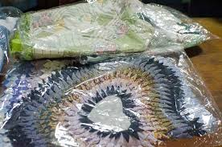
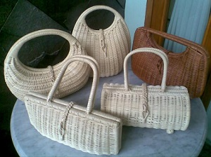
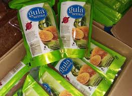
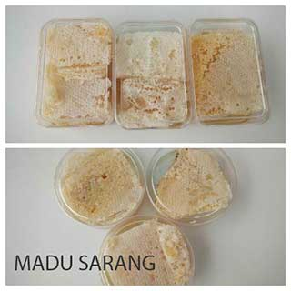
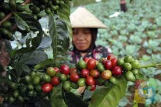

1. Doormats

products that can be produced by the village ciburial one of them is a foot mat (a cleaning tool consisting of fiber parts or rigid fibers and usually attached or bonded into one thin piece). The unique foot mat made by this village made of cloth that is not used anymore or used cloth.
2. bamboo handicraft

There are a lot of handicraft objects produced by creative hands of ciburial craftsmen.
The average variety of handicraft objects are made of simple materials such as wood, bamboo, plastic.
3. Brown Sugar

Ciburial Red Sugar is much in demand by the community both in the village and outside the village. This is because the red sugar that comes from this village has a natural base ingredients without other chemicals. The process of making brown sugar (palm sugar) starts from taking the water of enau fruit in the morning and cooked until 10 hours. After that it is printed onto a wooden mold until it hardened to 15 minutes. Besides, the price of palm sugar is also relatively cheap which is about 20 thousand rupiah per bungkusnya. That is what makes the sugar palm typical Ciburial Village attracted many people
4. Honey

Ciburial Village is not only famous as a fertile agricultural area, but also famous for its livestock. Honey bee and other animal livestock have been going lana, for more than five years. The honey farmers can produce one quintal honey in a month. Ciburial tour is marketed up to Bandung, Jakarta, Sumatra, Kalimantan, to Malaysia. Ciburial honey is in great demand because of consumer confidence in the efficacy of honey.
5. Coffee

The secret that makes Coffee aroma is delicious is the selection of coffee beans are not arbitrary, and coffee purchased from all coffee farmers in Indonesia is not directly produced but through stages such as washing, cleansed of dirt and then kept for 8 years for Arabica coffee and 5 years for robusta coffee and from this storage process which then lowers the acid levels of coffee so as to make coffee taste delicious and and healthy for consumption.
For how much is your own coffee? do not worry friends, all the prices offered by coffee shop aroma in banceuy street bandung city is very affordable for the size of anyone's pocket, especially for you lovers or really coffee enthusiasts, the price is certainly no longer a constraint just to be able to enjoy a glass of joy taste special and quality coffee like aroma coffee is not it?